Lego Powered Machines Building Instructions
科學動力
| 級別 | 圖片 | 主題 | YouTube | 單元介紹 | 操作示範/官網教案 | 搭建教案 | 比賽及改裝 |
|---|---|---|---|---|---|---|---|
| 1 |  |
1堆高機48 | 堆高機駕駛技術 | 操作示範 | |||
| 2 |  |
2重力車31 | 重力車 | 操作示範 | 搭建手冊 | ||
| 3 |  |
3大風帆車11 | 風帆車 | 操作示範 | 搭建手冊 | ||
| 4 |  |
4小風帆車28 | 風帆車 | 操作示範 | 搭建手冊 | ||
| 5 |  |
5連弩24 | 諸葛連弩 | 操作示範 | 搭建手冊 | ||
| 6 | 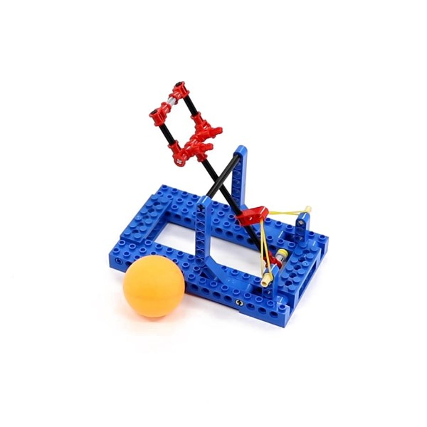 | 6投石機31 | 投石機 | 操作示範 | 搭建手冊 | ||
| 7 |  |
7攪拌機16 | 攪拌機 | 操作示範 | 搭建手冊 | ||
| 8 |  |
8攪拌器16 | 攪拌器 | 操作示範 | 搭建手冊 | 攪拌器改裝 | |
| 9 |  |
9投籃機(電機)50 | 籃球發球機 | 操作示範 | 搭建手冊 | ||
| 10 | 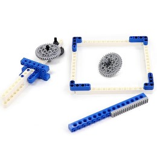 | 10戰鬥陀螺20 | 戰鬥陀螺 | 操作示範 | 搭建手冊 | ||
| 11 |  |
11道閘(手動)11 | 小心道閘 | 操作示範 | 搭建手冊 | 28彈力車己使用 | |
| 12 |  |
12梯子26 | 操作示範 | 搭建手冊 | |||
| 13 |  |
13塔13 | 操作示範 | 搭建手冊 | |||
| 14 |  |
14橡皮筋槍22 | 操作示範 | 搭建手冊 | |||
| 15 |  |
15折疊凳13 | 操作示範 | 搭建手冊 | |||
| 16 |  |
16折疊椅23 | 操作示範 | 搭建手冊 | |||
| 17 |  |
17回力車23 | 回力車怎麼跑 | 操作示範 | 搭建手冊 | ||
| 18 |  |
18機械手13 | 機械手臂原理 | 操作示範 | 搭建手冊 | ||
| 19 | 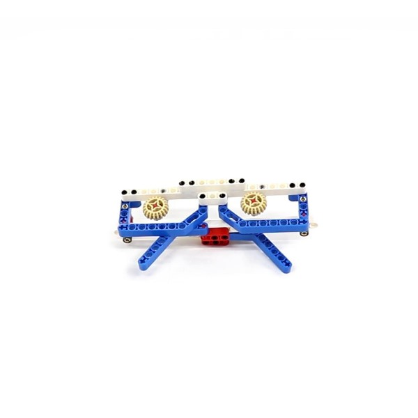 | 19戰鬥眼鏡(靜止)28 | 我的戰鬥力是53萬 | 操作示範 | 搭建手冊 | ||
| 20 |  |
20重型機車(電機)39 | 操作示範 | 搭建手冊 | |||
| 21 |  |
21裝甲車(電機)41 | 操作示範 | 搭建手冊 | |||
| 22 |  |
22平衡鳥(手動)37 | 好神奇的平衡鳥 | 操作示範 | 搭建手冊 | ||
| 23 | 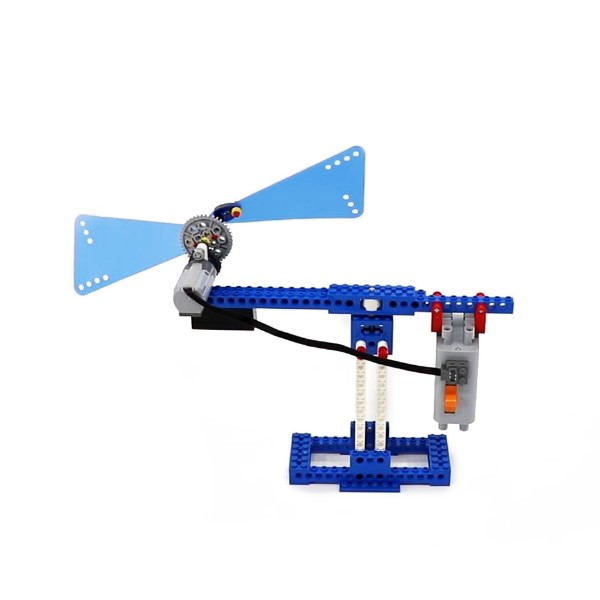 | 23平衡風車(電機)39 | 操作示範 | 搭建手冊 | |||
| 24 |  |
24手搖風扇35 | 操作示範 | 搭建手冊 | |||
| 25 |  |
25風力車(電機)35 | 操作示範 | 搭建手冊 | |||
| 26 |  |
26電動車(電機)18 | 操作示範 | 搭建手冊 | |||
| 27 |  |
27飛輪車(手動)16 | 操作示範 | 搭建手冊 | |||
| 28 |  |
28彈力車13 | 操作示範 | 搭建手冊 | 道閘搭建手冊 | ||
| 29 |  |
29清掃車 | 搭建手冊 | ||||
| 30 | 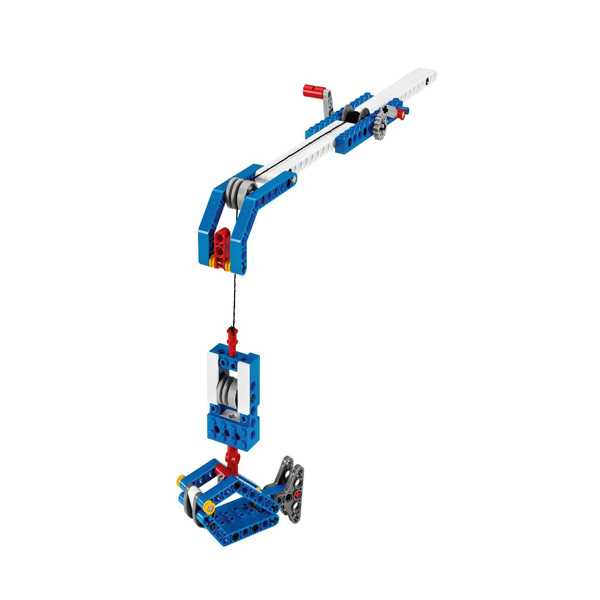 | 30魚竿 | 搭建手冊 | ||||
| 31 | 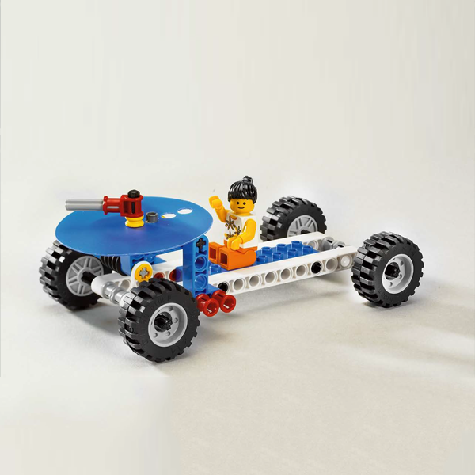 | 31慣性滑行 | 搭建手冊 | ||||
| 32 | 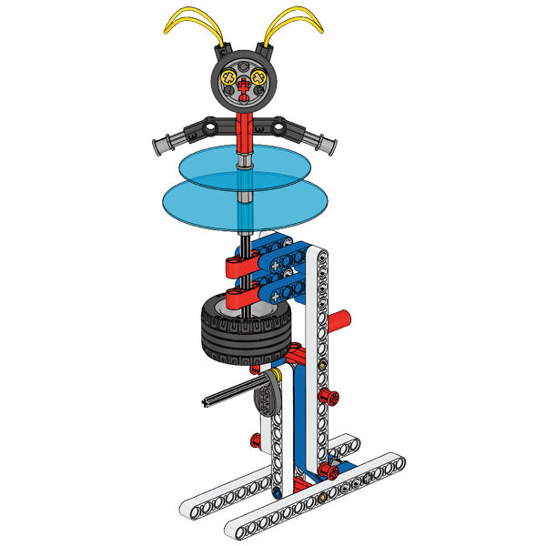 | 32錘子 | 搭建手冊 | 大榔頭和錘子前半部相同 | |||
| 33 |  |
33特朗德爾輪 | 特朗德爾輪 | 搭建手冊 | |||
| 34 |  |
34台秤 | 台秤 | 搭建手冊 | |||
| 35 |  |
35擺鐘 | 擺鐘 | 搭建手冊 | |||
| 36 |  |
36風車 | 風車 | 搭建手冊 | |||
| 37 |  |
37陸地游艇 | 搭建手冊 | 37陸地游艇58超大風帆車前半部相同 | |||
| 38 |  |
38飛輪 | 飛輪 | 搭建手冊 | |||
| 39 |  |
39動力車 | 動力車 | 搭建手冊 | |||
| 40 |  |
40高速賽車 | 搭建手冊 | ||||
| 41 |  |
41機械巨蟲(A)(B) | 博比特蟲 | 搭建手冊 | |||
| 42 | 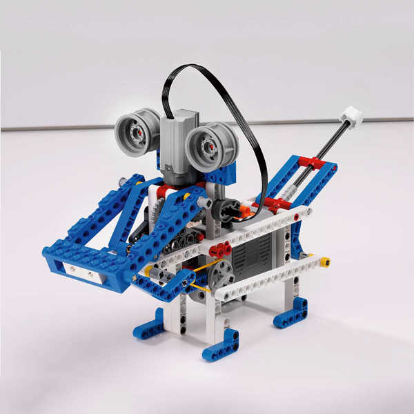 | 42機器狗 | SONY-寵物機器狗Aibo | 搭建手冊 | |||
| 43 |  |
43天平 | 搭建手冊 | ||||
| 44 | 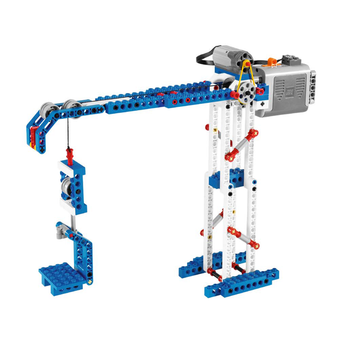 | 44塔式起重機 | 搭建手冊 | ||||
| 45 | 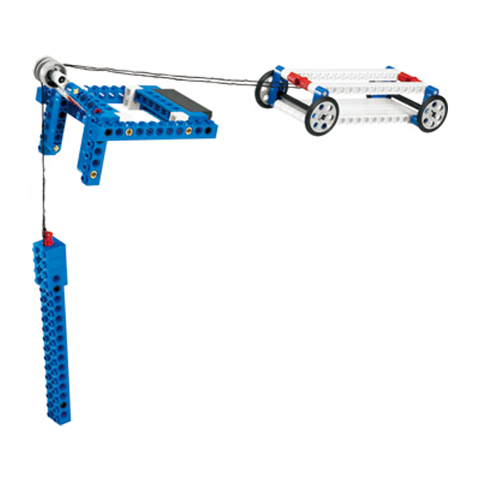 | 45坡道 | 搭建手冊 | ||||
| 46 |  |
46變速賽車 | 搭建手冊 | ||||
| 47 | 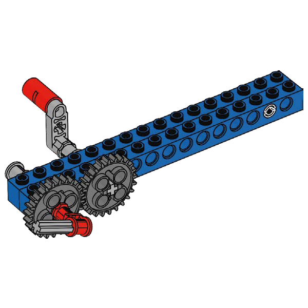 | 47齒輪10種結構 | 搭建手冊 | ||||
| 48 | 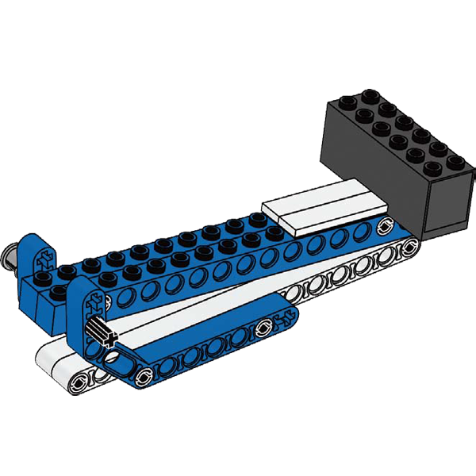 | 48槓桿 | 搭建手冊 | 可以變投石器投輪胎 | |||
| 49 | 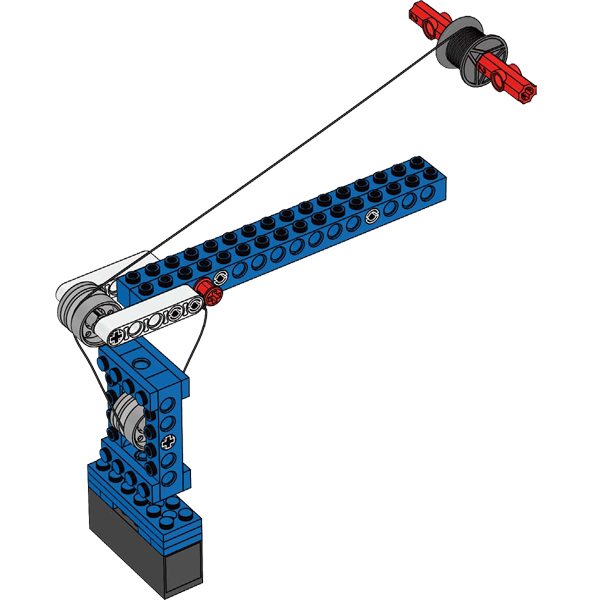 | 49滑輪 | 搭建手冊 | ||||
| 50 | 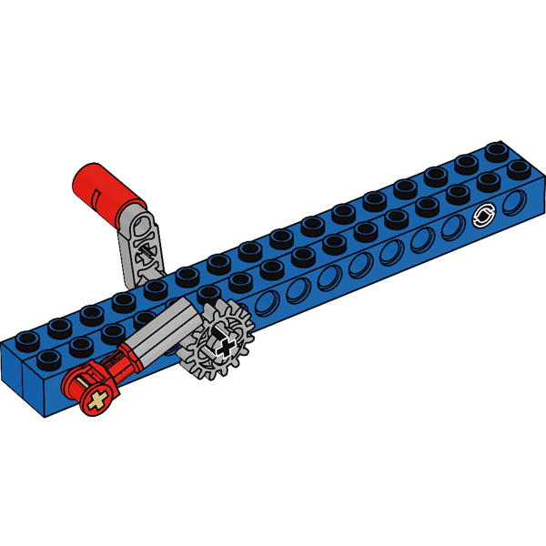 | 50棘爪棘輪 | 搭建手冊 | 只有兩個步驟 | |||
| 51 | 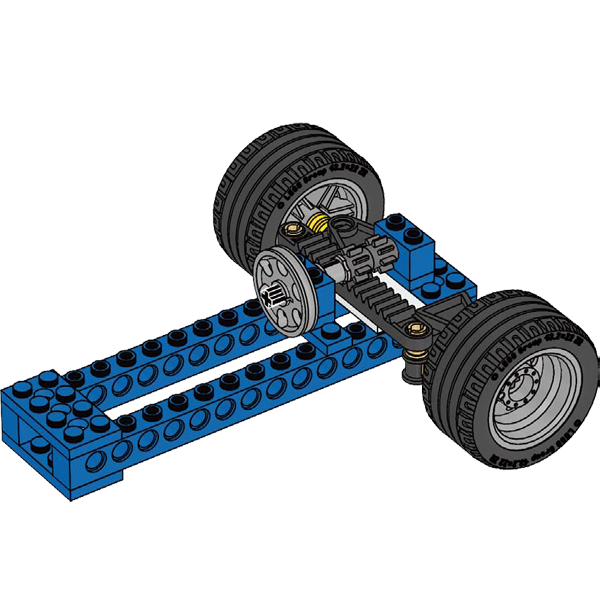 | 51輪軸 | 搭建手冊 | ||||
| 52 |  |
52螺旋 | 搭建手冊 | ||||
| 53 |  |
53凸輪 | 搭建手冊 | ||||
| 54 |  |
54穩定結構 | 搭建手冊 | ||||
| 55 |  |
55楔形 | 搭建手冊 | ||||
| 56 |  |
56斜面 | 搭建手冊 | ||||
| 57 | 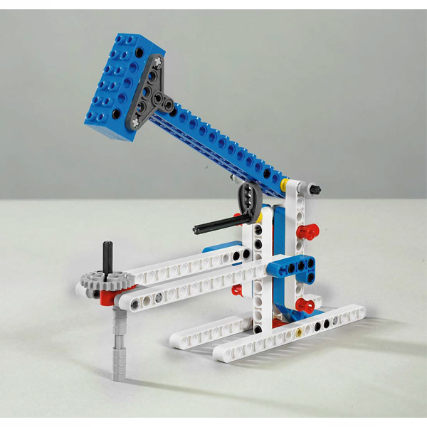 | 57大榔頭 | 大榔頭 | 搭建手冊 | 57大榔頭和32錘子前半部相同 | ||
| 58 | 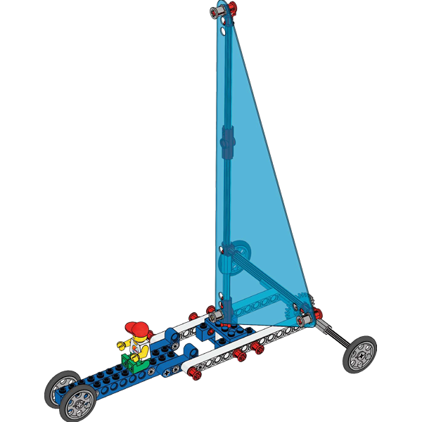 | 58超大風帆車 | 搭建手冊 | 37陸地游艇58超大風帆車前半部相同 | |||
| 59 |  |
59創作蓋章信 | 完成圖 | 大榔頭+風車 | |||
| 60 | 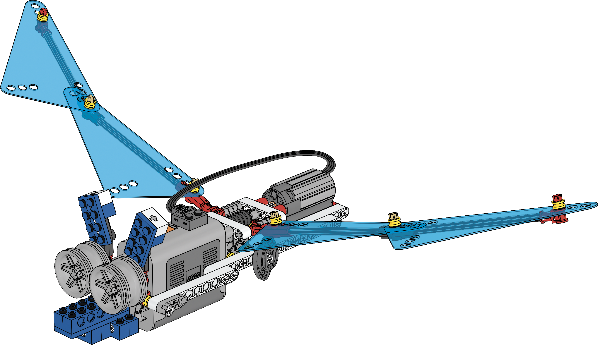 | 60創作蝙蝠 | 完成圖 | ||||
| 61 |  |
61創作起重機 | 完成圖 | ||||
| 62 | 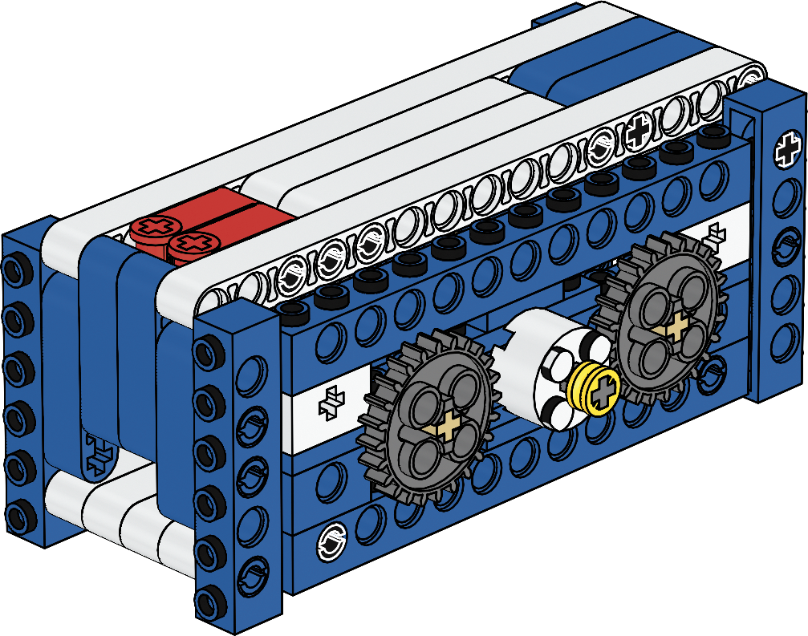 | 62創作魔術鎖 | 完成圖 | ||||
| 63 | 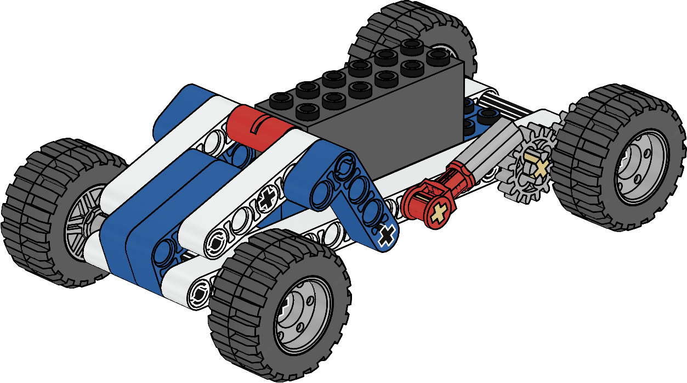 | 63創作向前車 | 完成圖 | ||||
| 64 |  |
64創作橋樑 | 完成圖 | ||||
| 65 | 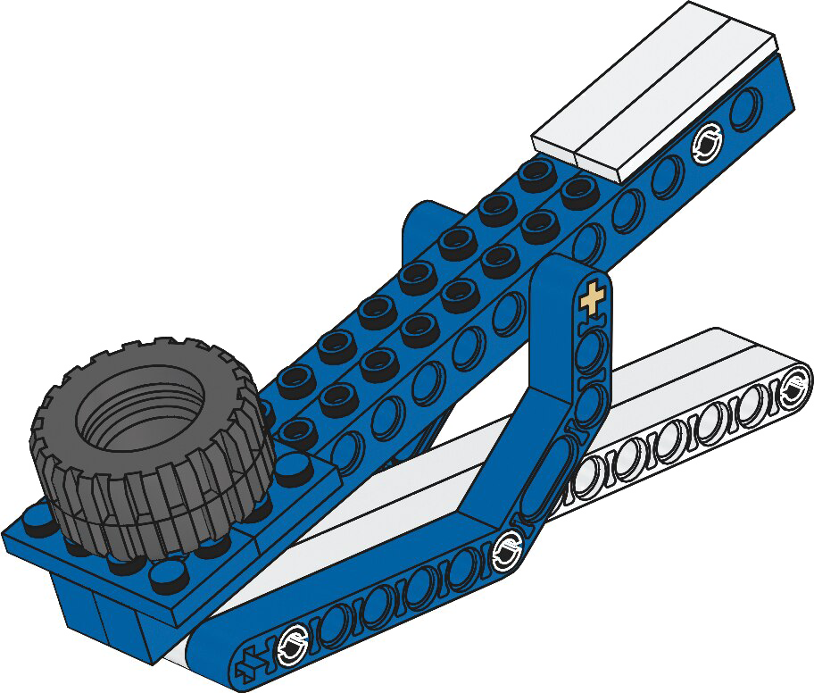 | 65創作投石器 | 完成圖 | ||||
| 66 |  |
66創作手推車 | 完成圖 | ||||
| 67 |  |
67創作旋轉木馬 | 完成圖 | ||||
| 68 |  |
68創作守望塔 | 完成圖 | ||||
| 69 | 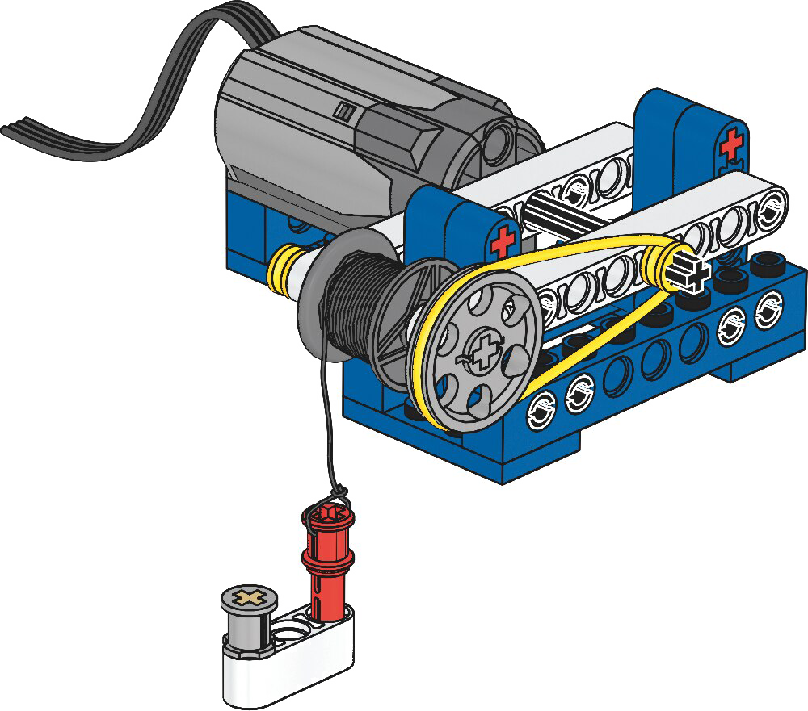 | 69創作絞車 | 完成圖 |